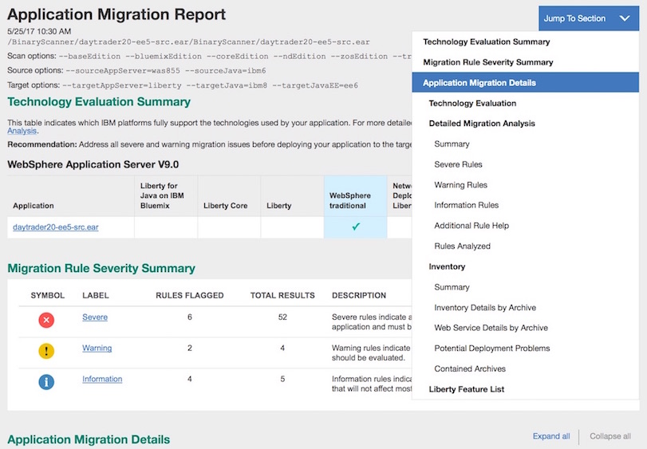
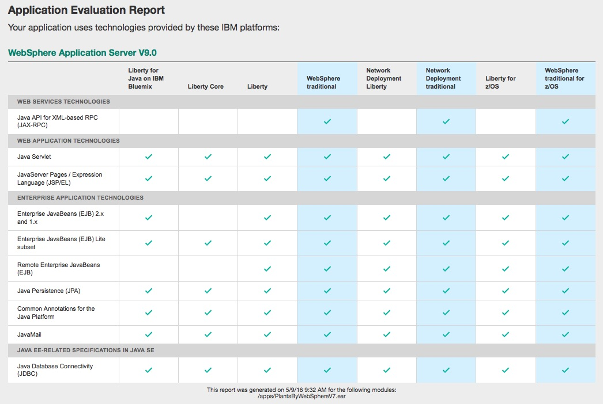

Looking for information about migration? Start here…
As we continuously deliver Liberty, the Liberty zero migration vision is alive and well. We strive to never break an existing application or configuration by introducing a behavior change.
But sometimes you need to upgrade an application with new server features or move to a different edition. And moving between other servers, like WebSphere Application Server traditional or non-IBM application servers, can require migration. The last thing you want is to be caught by surprise by unanticipated migration difficulties. This is where the WebSphere Application Server Migration Toolkit can help. With static analysis we can scan your application source or application binaries to find those gotchas that can occur between different application servers, different Java SE versions, and between different Java EE levels.
The WebSphere migration toolkit provides a rich set of tools that help you migrate between versions of traditional WebSphere, to Liberty, to cloud platforms such as Liberty for Java on IBM Bluemix Instant Runtimes, and from non-IBM application servers. We do this by scanning your source, binaries, and configurations.
The migration toolkit is updated to help you migrate to traditional WebSphere Application Server V9.0. The traditional V9.0 server is Java EE 7 compliant and shares the same technology updates that were previously only available on Liberty. Both the binary and source scanners will help guide you through differences in the Java EE 7 platform as well as inform you of application-related deprecations and removals. Whether you are using WebSphere V9.0 on-premises or on Bluemix, the migration toolkit can help you get there.
Configuration Scanning
Source Scanning
Our WebSphere Application Server Migration Toolkit provides an Eclipse-based migration experience. With one easy installation, you can access the following migration tools:
- Cloud Migration Tool
- WebSphere Version to Version Application Migration Tool
- Apache Tomcat to WebSphere Application Migration Tool
- JBoss to WebSphere Application Migration Tool
- Oracle to WebSphere Application Migration Tool
- WebLogic to WebSphere Application Migration Tool
- Apache Tomcat to Liberty Profile Configuration Migration Tool
These application migration tools are Eclipse features that you install into an existing Eclipse or Rational IDE where you develop your source code. Once installed, the tools can scan your applications for migration issues that you might have to address so that your application can run on the targeted version of WebSphere Application Server. Where possible, the Eclipse-based tools provide quick fixes to programmatically make application changes for you.
Moving to the cloud
When moving an application to a cloud environment, the Cloud Migration Tool has support for the following cloud targets: Bluemix Instant Runtimes, third-party PaaS environments, Docker (IBM Containers), and WebSphere on Cloud (virtual machines). The tools have a set of rules that help you analyze the impact of moving an application to the cloud based on the connections the application uses such as:
- Databases
- Enterprise information systems (EIS)
- Java EE security
- JavaMail server
- Java Message Service (JMS)
- Message-Driven Beans (MDB)
- Remote EJB lookups
- Remote EJB providers
- Remote web services
- Third-party security
- Vendor specific messaging
Evaluating the application’s use of connected services helps you consider latency issues, data movement, and the use of cloud services that might be relevant to a cloud migration.
When moving an application to Liberty for Java on IBM Bluemix or to a non-IBM Cloud PaaS environment, the Cloud Migration Tool offers additional advice, suggestions, and best practices to ensure the application will run correctly. For example, it will warn about using the Java File I/O API for storing persistent information on the local file system or suggest using the IBM Bluemix SessionCache service for storing HTTP session data. When migrating an application to a cloud environment running Liberty, we recommend you get the application running on a standalone Liberty server first, then move it to the cloud.
Moving between WebSphere versions
The WebSphere Version to Version Application Migration Tool scans your application source code and highlights Java EE programming model and WebSphere API differences between traditional WebSphere versions (Version 5.1 or later to Version 9.0) and to Liberty. It also informs you about any implementation differences that could affect your applications.
Moving from a non-IBM app server
You can install the migration tools for non-IBM application servers from the WebSphere Application Server Migration Toolkit to help you migrate applications to traditional WebSphere or Liberty from:
- Apache Tomcat Server
- Red Hat JBoss Application Server
- Oracle Application Server
- Oracle WebLogic Server
Moving between Java versions
The tools include Java migration support for moving up from an earlier version of Java. Our Java 8 migration rules allow you to check your application for Java 8 readiness as it scans for known compatibility issues. The Eclipse interface for Software Analysis Results and Help is shown below.
{kind=link}
WebSphere Application Server V9.0 only supports Java SE 8, so use the toolkit to help you understand the differences.
Binary scanning
The Migration Toolkit for Application Binaries is our command-line tool that allows you to scan your application binaries quickly and easily without source code. It contains many of the same rules as the Eclipse-based migration toolkit and provides application technology evaluation, inventory details, as well as detailed migration analysis. It helps you with application migrations between versions of traditional WebSphere (Version 6.1 and later), from traditional WebSphere to Liberty, to cloud environments such as Liberty for Java on IBM Bluemix. It also helps you migrate applications coming from JBoss, WebLogic and Apache Tomcat Application Servers to WebSphere traditional or Liberty.
If you are migrating to Liberty, it can also generate a feature list configuration file containing the application required features. All you need to start evaluating applications is the installed command-line tool and your application binaries (EAR or WAR files). If you have hundreds of applications, you can write a simple script to evaluate each and save the output to separate reports. If you run the command on a folder, the –all action automatically generates a separate report for each application binary. For the administrator, planner, or developer not using Eclipse, this is a great addition to the toolkit! (A Java 7 or 8 JRE/JDK is required to run this tool.)
There are five easy actions, –all, –evaluate, –inventory, –analyze and –featureList, to produce the information you need. Use the –all action to generate a consolidated migration report that contains the content of all the other reports. You can create the reports in HTML by default or switch the format to JSON. The JSON files can be imported into a document database, such as MongoDB, for easy analysis.
All you need to start evaluating applications is the installed command-line tool and your application binaries (EAR or WAR files). If you have hundreds of applications, you can write a simple script to evaluate each and save the output to separate reports. If you run the command on a folder, the –all action automatically generates a separate report for each application binary. For the administrator, planner, or developer not using Eclipse, this is a great addition to the toolkit!
Application Migration Report
The Application Migration Report is a consolidated migration report that contains the content of the Application Evaluation Report, the Application Inventory Report, the Detailed Migration Analysis Report, and the Liberty feature list configuration. The beginning of the report contains a technology evaluation summary, which indicates which IBM platforms support the technologies used by the application, and a rule severity summary that shows how many rules and rule results are flagged for each rule severity. The default report shows migration results for migrating from WebSphere Application Server V8.5.5 and Java SE 6 to Liberty and Java SE 8. You should modify the source and target options to fit your migration scenario. The Application Migration Details section of the report contains a section corresponding to each of the individual actions.
{kind=link}

Evaluation Report
Both the Eclipse-based migration tools and the binary scanner can examine your application and generate the Application Evaluation Report, which shows which editions of WebSphere Application Server are best suited to run the application. The report provides a list of Java EE programming models that are used by the application, and it indicates whether the application can be supported by traditional WebSphere or Liberty. The report has been updated to indicate the latest levels of Java EE 7 support available on traditional WebSphere and Liberty.
{kind=link}

Inventory Report
The binary scanner has an inventory report that helps you examine what’s in your application including the number of modules and the technologies in those modules. It also gives you a view of all the utility JAR files in the application that tend to accumulate over time. Potential deployment problems and performance considerations are also included.

Detailed Reports using the binary scanner
The evaluation report primarily scans for Java EE technologies that the application uses. This information gives you a high level view of the platforms that can support your application’s technologies. Use the binary scanner’s detailed migration report to dig deeper to understand the nitty-gritty details of the migration. The detailed report helps with migration issues like deprecated or removed APIs, Java SE version differences, and Java EE behavior differences.
{kind=link}
When migrating to a cloud environment, the Connectivity Rules Summary quickly shows your application dependencies on resources such as databases, messaging systems, security services, etc. All connected services need to be evaluated when moving to the cloud for connectivity and latency considerations. This summary is only available in the binary scanner detailed analysis report.
Feature list configuration
The binary scanner can generate Liberty server configuration files that contain the required features for each application. Use these files to configure your Liberty server by copying the content to the Liberty server.xml file, or use the <include> element to include it in the server configuration.

Configuration scanning
Version-to-Version Configuration migration
The traditional WebSphere Application Server WASPreUpgrade, WASPostUpgrade, and createRemoteMigrJar commands and wizards have been updated for Version 9.0 with enhancements to help you move your traditional configuration forward. Visit the IBM Knowledge Center to learn more about Migrating the product. There is also a new clone migration option that allows you to move your configuration without system outages.
For more information about the following new migration features, see What’s new in WebSphere Application Server V9?:
- Clone migration
- Migration options properties files
- Improved port assignment
- Integrated Compute Grid migration
- Integrated WebSphere Virtual Enterprise migration
- WASMigrationAppInstaller application installation tool
The configuration migration tools do not alter the configuration of your existing WebSphere Application Server installation. The tools provide a two-phased approach to migration as described here:
- The configuration from your existing WebSphere Application Server is copied into a backup directory.
- The content of the configuration backup directory is merged into a new profile that is in your new WebSphere Application Server installation. By default, all of the configuration objects, including servers, resources, and virtual hosts, are merged into the new profile. Also, all applications are deployed to your new WebSphere Application Server environment.
An intuitive migration wizard is provided that guides you through the local migration process. A remote migration process is also supported for distributed systems using the command-line tools. For more information, see Migrating, coexisting, and interoperating in the IBM Knowledge Center.
Traditional WebSphere to Liberty or third-party configuration migration
The Apache Tomcat to Liberty Profile Configuration Migration Tool helps you move server configuration and application configuration to Liberty by automatically migrating portions of the configuration. The tool supports:
- Migrating from Apache Tomcat 6.0 or 7.0
- Migrating to Liberty
- Migrating Apache Tomcat context, server, and web XML information contained in the server
- Migrating Apache Tomcat context and web XML information contained in the application
Use the WebSphere Configuration Migration Tool to migrate server configuration from JBoss or WebLogic to traditional WebSphere or Liberty. It also assists in migrating resource configuration from traditional WebSphere to Liberty. When migrating to traditional WebSphere, the tool generates scripts used to manage the configuration. When migrating to Liberty, the tool generates a server.xml configuration file.
{kind=link}
Check out our downloads, videos, and additional information, and let us know how we can help.
Downloads
Get the migration to cloud tool!
Related documents
- WebSphere Application Server Migration Toolkit documentation
- Migration Toolkit for Application Binaries documentation
Related articles
- WebSphere Migration Knowledge Collection: Planning and resources
- WebSphere Migration Discovery Tool
- What’s new for migration in V9?
- WebSphere Configuration Migration Tool for IBM Cloud
- What is the Migration Toolkit for Application Binaries?
- Move applications to Liberty using the Migration Toolkit
- The end of Java SE 6: Where to go from here
- Updating to Java EE 7
- Using JSON data from the Migration Toolkit for Application Binaries
- The Liberty zero migration vision
- Making the move to the Liberty profile, Part 1: Determining migration suitability using the Liberty Technology Preview
- Making the move to the Liberty profile, Part 2: Migrating Java EE resources with the Configuration Migration Toolkit
- Measuring performance with the Daytrader 3 benchmark sample
- Porting a Liberty MongoDB application to run on WebSphere Application Server Full Profile
- Migrating your apps to WebSphere the easy way
- Things to be aware of when migrating from traditional WebSphere to WebSphere Liberty
How to create a WAR for WebSphere Server?
I’m using Eclipse and Apache Tomcat 7, wherein, when created the war and deployed on Tomcat works fine, but the same war when deployed on WebSphere Gives Error.
Hi Shubham,
You would create a WAR for WebSphere in a similar fashion as you did for Tomcat. Are you using Maven? An IDE? A Java EE compliant WAR should also deploy to Liberty. What errors are you seeing?
Hello,
I want to migrate some applications from was855 to libertycore.
I just want to have the list of all severe rules checked for the migration.
When generating the report, we can only have the rules representing a risk for the migration but we also need the rules witch are checked and verified (even if they don’t represent a risk ).
This is actually important for the migration we are trying to accomplish.
Many thanks
Khaled
The full list of all rules that are run during a scan is listed in the “Rules Analyzed” section of the “Detailed Migration Analysis” report. Unfortunately the rule severity is not included in that list. Will that give you what you need?
Hello,
we want to migrate from WAS V8.5.5 to V9.0.0 both on z/OS. Can you give some hints where to find useful information?
Kind regards.
Juergen
The WebSphere Migration Knowledge Collection (z/OS tab) (https://www-01.ibm.com/support/docview.wss?uid=swg27010819) is a great place to start. It contains z/OS migration information and links to the knowledge center. Also, see the other pages in the knowledge collection – it is all about migration.
Cindy
Hi cinndy,
I have migrated WAS7.0.0.43 to WASND 8.5.5.13, after migration am not see the installed applicatio(EAR). Please suggest me.
Regards,
Prabhu Mani.
You will need to look at the logs and trace and see what it is telling you. There are many reasons why the application fails to deploy.
The Knowledge Center contains instructions on how to retry deploying failed applications. You can then isolate the deployment issue.
Without the logs, I would just be guessing as to why your applications did not deploy.
Hi Prabhu,
Try running the WASMigrationAppInstaller command which will find in the bin directory of the new profile you created. Point the command to the migration backup directory used by WASPostUpgrade. That command will try to redeploy all the applications that are not currently deployed and should print out messages for each app saying if it was deployed or possibly an error if not.
Here is the command help:
https://www.ibm.com/support/knowledgecenter/en/SSEQTP_9.0.0/com.ibm.websphere.migration.base.doc/ae/rmig_WASMigrationAppInstaller.html
If you need more help after that, open a support ticket for quicker assistance.
Thanks,
Cindy
hello Cindy, I need to migrate WAS v5.0 to v8.5.5. Could you suggest an approach? Do migration tools work for v5.0 also or will I have to first upgrade to some interim version before finally moving to v8.5.5?
Also, WAS v5.0 is installed on a Windows 2003 server and I need to migrate it to a Windows 2008 server with WAS 8.5.5.
As of WebSphere v7 released in 2008, the Version-to-Version Configuration Migration Tools (WASPreUpgrade and WASPostUpgrade) no longer support WebSphere V5.0 and earlier versions. See page two of the WebSphere Application Server v7 Migration Guide, “Automatic migration utilities no longer support WebSphere V5.0 as an originating system version” –> http://www.redbooks.ibm.com/redpapers/pdfs/redp4635.pdf
In theory, you could use the configuration migration tools to migrate to WebSphere v6.1. Then, from WebSphere v6.1, perform a remote migration to WebSphere v8.5.5. However, WebSphere v6.1 is out of service and no longer supported. If any problems were encountered with the WebSphere v6.1 migration you would not be able to get any support or bug fixes. Additionally, performing intermediate migrations can be very time consuming due to having to work through various technical issues as you migrate to each version, and also performing all testing twice. If you skipped thorough testing on the intermediate install, you would not be able to track if a problem was introduced by the first or second migration. Instead the recommendation would be to start with a fresh WebSphere v8.5.5 install and configure all necessary settings such as security, shared libraries, and database resources by hand. Then port your applications into this environment one at a time.
Hi Cindy,
I am interested in migrating an app from t WAS to liberty WAS. I have tried reading the posts and watching the videos and got no where very fast.
Is there a tutorial where an app is migrated and all the eclipse and tools steps are described slowly and
clearly , so that a non expert in the art can benefit?
Your migration video between was versions, eg was 80 to liberty went so fast especially in the section of
downloading the tools from wasdev.net. Your screen shot in the video is different from the current wasdev.net page.
Thanks
Thanks
Please see the “Downloads” and “Related documents” sections on the right side of this page above. If you take the links to the two migration tools, their download pages describe how to install each tool. Both tools also have PDF documentation provided under “Related documents”. Those PDFs contain chapters on installation, configuring and running the tools. You should find what you need in those documents.
[…] the October 2015 beta, all of the migration toolkits have been refreshed and combined into fewer […]